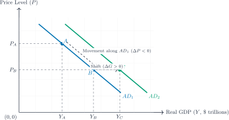
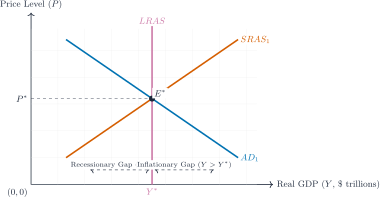
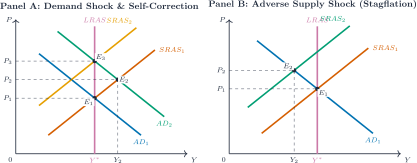

9 Chapter 9: Aggregate Demand and Aggregate Supply (AD–AS)
This chapter develops the Aggregate Demand–Aggregate Supply (\(AD\text{–}AS\)) framework to explain short-run business cycle fluctuations in real output, unemployment, and the aggregate price level alongside long-run economic growth and nominal adjustment. Aligned with Krugman and Wells’s macroeconomics progression, each core topic integrates conceptual intuition, Okabe-Ito coordinate geometry, empirical U.S. Federal Reserve Economic Data (FRED) applications, and algebra-first equilibrium modeling.
9.1 Learning Outcomes, Key Terms, and Opening Dilemma
Course Learning Outcomes (CLOs)
Upon completing this chapter, students will be able to:
- Distinguish a movement along the Aggregate Demand (\(AD\)) curve caused by a change in the aggregate price level from a shift of the \(AD\) curve caused by changes in planned spending (\(C, I, G, NX\)).
- Explain why the Short-Run Aggregate Supply (\(SRAS\)) curve slopes upward due to nominal wage and price stickiness, whereas the Long-Run Aggregate Supply (\(LRAS\)) curve is vertical at potential output (\(Y^*\)).
- Diagnose recessionary output gaps (\(Y < Y^*\)) and inflationary output gaps (\(Y > Y^*\)) using \(AD\text{–}SRAS\text{–}LRAS\) equilibrium coordinates and trace the economy’s long-run self-correcting adjustment.
- Contrast the macroeconomic effects of demand shocks with adverse supply shocks (stagflation) both graphically and algebraically, and evaluate empirical co-movements across , , and .
Curricular Alignment: Supports SFSU ECON 102 Course Learning Outcome MA-3 and California C-ID ECON 202 (C2002-2).
Key Terms
Aggregate Demand (\(AD\)) \(\bullet\) Wealth Effect \(\bullet\) Interest-Rate Effect \(\bullet\) Exchange-Rate (Net Export) Effect \(\bullet\) Short-Run Aggregate Supply (\(SRAS\)) \(\bullet\) Sticky Wages and Prices \(\bullet\) Long-Run Aggregate Supply (\(LRAS\)) \(\bullet\) Potential Output (\(Y^*\)) \(\bullet\) Recessionary Gap \(\bullet\) Inflationary Gap \(\bullet\) Self-Correcting Mechanism \(\bullet\) Demand Shock \(\bullet\) Supply Shock \(\bullet\) Stagflation.
In 2020, pandemic lockdowns caused total spending and production to plunge simultaneously. By 2021–2022, aggressive fiscal stimulus and pent-up household demand collided with global semiconductor shortages, port bottlenecks, and a sharp spike in global energy prices following geopolitical conflict. Consumer price inflation () surged to a four-decade high above 9%, while policymakers debated whether rising prices reflected excessive aggregate demand or constrained aggregate supply. The \(AD\text{–}AS\) model provides the exact analytical lens required to separate demand-driven expansions from supply-driven stagflation.
9.2 Aggregate Demand: Total Planned Spending and the Price Level
Conceptual Introduction
Aggregate Demand (\(AD\)) represents the total quantity of domestically produced final goods and services that households, firms, governments, and foreign buyers plan to purchase at each aggregate price level (\(P\)), holding all non-price determinants constant (ceteris paribus). Summing across the four expenditure sectors established in Chapter 4 gives total planned spending:
\[ AD = C + I + G + NX \]
Unlike a microeconomic demand curve—which holds all other prices and consumer income constant while varying the relative price of a single good—the \(AD\) curve tracks economy-wide real output (\(Y\)) as the overall price level (\(P\), measured by the GDP deflator or CPI) changes across all markets simultaneously.
Three distinct macroeconomic channels explain why the \(AD\) curve slopes downward from left to right:
- The Wealth (Real-Balances) Effect: When the aggregate price level \(P\) falls, the real purchasing power of households’ fixed nominal financial assets (cash, checking deposits, nominal bonds) rises. Feeling wealthier, households increase real consumption spending (\(C\)).
- The Interest-Rate Effect: A lower price level reduces the amount of money households and firms need to hold for everyday transactions. As money demand falls, nominal and real interest rates (\(r\)) decline, lowering borrowing costs and stimulating business investment (\(I\)) and durable consumption (\(C\)).
- The Exchange-Rate (Net Export) Effect: When lower domestic interest rates reduce the return on U.S. financial assets relative to foreign assets, capital outflows depreciate the domestic currency. A weaker currency makes domestic exports cheaper for foreign buyers and imports more expensive for domestic residents, increasing net exports (\(NX = X - M\)).
When any factor other than the current domestic price level alters planned spending at every price level, the entire \(AD\) curve shifts. Rightward shifts (\(AD_1 \rightarrow AD_2\)) result from stronger consumer confidence, higher expected business profitability, expansionary fiscal policy (higher \(G\) or lower taxes \(T\)), expansionary monetary policy (lower policy interest rates), faster foreign GDP growth, or currency depreciation. Leftward shifts occur when these forces reverse.
Visual Representation

A change in the domestic aggregate price level \(P\) causes a movement along a stationary \(AD\) curve via the wealth, interest-rate, and exchange-rate effects. By contrast, a change in autonomous consumption, investment, government purchases, net exports, or monetary/fiscal policy at any given price level shifts the entire \(AD\) curve. Never treat an endogenous change in \(P\) as a shifter of \(AD\).
Mathematical Foundation
Assume linear aggregate planned expenditure where autonomous spending responds inversely to the price level \(P\) (capturing the wealth, interest-rate, and exchange-rate channels with slope parameter \(\beta > 0\)):
\[ AD: \quad Y = A_0 - \beta P \qquad \Longleftrightarrow \qquad P = \frac{A_0}{\beta} - \frac{1}{\beta} Y \]
Here, \(A_0\) summarizes non-price autonomous spending determinants (\(C_0, I_0, G, NX_0\)). Any increase \(\Delta A_0 > 0\) shifts the horizontal intercept rightward by \(\Delta Y = \Delta A_0\) at every price level \(P\).
Suppose baseline Aggregate Demand is given by \(Y = 45 - 0.25P\) (with \(Y\) in trillions of 2017 dollars and \(P\) as a price index).
Movement Along \(AD\): Calculate real output demanded when \(P = 120\) versus \(P = 100\).
At \(P = 120\): \(Y_A = 45 - 0.25(120) = 45 - 30 = \$15.0\text{ trillion}\).
At \(P = 100\): \(Y_B = 45 - 0.25(100) = 45 - 25 = \$20.0\text{ trillion}\).
Moving from \(P = 120\) to \(P = 100\) expands quantity demanded by \(+\$5.0\text{ trillion}\) along the same curve.
Shift of \(AD\): Suppose an autonomous investment boom increases \(A_0\) by \(\$4.0\text{ trillion}\) at every price level, yielding \(Y = 49 - 0.25P\). At \(P = 100\):
\[ Y_C = 49 - 0.25(100) = 49 - 25 = \$24.0\text{ trillion} \]
At an unchanged price level of \(P = 100\), the \(AD\) curve shifts horizontally rightward by \(\Delta Y = \$4.0\text{ trillion}\).
Real-World Application
Interest-Rate Sensitivity in U.S. Residential Investment (2022–2024): When the Federal Reserve raised its administered interest-rate corridor during 2022–2023 to curb post-pandemic inflation, 30-year fixed mortgage rates rose from roughly 3% to over 7%. Even before overall consumer prices fell, higher borrowing costs sharply reduced planned residential investment (\(I\)) and auto/durable purchases (\(C\)), shifting the U.S. \(AD\) curve leftward relative to its 2021 trajectory and cooling excess demand.
9.3 Short-Run and Long-Run Aggregate Supply
Conceptual Introduction
Aggregate Supply links the aggregate price level (\(P\)) to the total quantity of real goods and services (\(Y\)) that domestic firms are willing and able to produce. Crucially, supply behavior depends on the time horizon over which input costs adjust:
- Short-Run Aggregate Supply (\(SRAS\)): In the short run, nominal wages and many input prices are sticky—locked in by multi-year union contracts, annual salary cycles, or menu costs. When the overall price level \(P\) rises while nominal unit production costs remain temporarily fixed, revenue per unit rises faster than cost per unit. Profit margins widen, inducing firms to expand production and hire more workers, which gives \(SRAS\) its positive upward slope.
- Long-Run Aggregate Supply (\(LRAS\)): In the long run, all nominal wages, input prices, and price expectations adjust fully to match the aggregate price level. Because doubling all output prices and all input wages leaves real relative prices and profit margins unchanged, long-run output is independent of \(P\). Consequently, \(LRAS\) is vertical at potential output (\(Y^*\))—the sustainable level of real GDP determined by the economy’s labor force, physical and human capital stock, natural resources, technology, and institutions (corresponding to the natural rate of unemployment \(u^*\)).
While \(LRAS\) shifts rightward over decades through capital deepening, labor force growth, and technological innovation (mirroring outward shifts of the Macroeconomic PPF in Chapter 2), \(SRAS\) shifts whenever unit production costs or price expectations change:
- Nominal Wage Changes: Higher nominal wage settlements raise unit labor costs and shift \(SRAS\) leftward (upward).
- Commodity and Energy Prices: Spikes in oil, electricity, or raw material prices raise production costs and shift \(SRAS\) leftward.
- Expected Price Level (\(P^e\)): When workers and firms expect higher inflation (\(P^e \uparrow\)), they negotiate higher nominal wages today, shifting \(SRAS\) leftward.
- Productivity Shocks: Advances in total factor productivity lower unit costs and shift both \(SRAS\) and \(LRAS\) rightward.
Visual Representation

u^*), whereas equilibria to the right of Y^* create inflationary gaps (u < u^*).">A higher aggregate price level boosts production only when output prices rise faster than nominal wages and input costs. In the short run, sticky contracts hold nominal wages temporarily fixed, so higher \(P\) raises profit per unit and expands real GDP along \(SRAS\). In the long run, nominal wages adjust proportionally with \(P\), restoring original real wages and profit margins; therefore, long-run output returns to potential GDP (\(Y^*\)) regardless of the price level.
Mathematical Foundation
In linear form, Short-Run Aggregate Supply reflects sticky nominal wages (\(W_0\)) anchored to the expected price level (\(P^e\)) with supply slope parameter \(\gamma > 0\):
\[ SRAS: \quad Y = Y^* + \gamma (P - P^e) \qquad \Longleftrightarrow \qquad P = P^e + \frac{1}{\gamma}(Y - Y^*) \]
When actual prices equal expected prices (\(P = P^e\)), short-run output equals potential output (\(Y = Y^*\)), which defines the vertical \(LRAS\) schedule. If \(P > P^e\), real wages (\(W_0 / P\)) fall temporarily and firms expand output above \(Y^*\); if \(P < P^e\), real wages rise and firms cut production below \(Y^*\).
Real-World Application
AI Infrastructure, Productivity, and \(LRAS\) vs. \(SRAS\): Heavy capital investment in data centers, automation, and cloud computing initially boosts \(AD\) through higher business investment (\(I\)). Over a multi-year horizon, however, if those technologies raise output per worker across logistics, healthcare, and software, they reduce unit labor costs—shifting both \(SRAS\) and vertical \(LRAS\) rightward and allowing higher non-inflationary potential output (\(Y^*\)).
9.4 Demand Shocks, Stagflation, and Long-Run Adjustment
Conceptual Introduction
Macroeconomic fluctuations arise from exogenous shocks that displace the economy from \(E^* = (Y^*, P^*)\):
- Positive Demand Shock (\(AD_1 \rightarrow AD_2\)) and Self-Correction: A surge in planned spending raises both short-run output (\(Y_2 > Y^*\)) and the price level (\(P_2 > P^*\)), opening an inflationary gap where unemployment falls below \(u^*\). Because labor markets are tight and workers’ real purchasing power has been eroded by higher prices (\(P_2 > P^e\)), workers demand higher nominal wages as contracts renew. Rising nominal wages increase unit production costs, shifting \(SRAS\) leftward (\(SRAS_1 \rightarrow SRAS_2\)) until output returns to \(Y^*\) at a permanently higher price level (\(P_3 > P_2\)). Conversely, after a negative demand shock creates a recessionary gap (\(Y < Y^*\)), high unemployment eventually puts downward pressure on nominal wage growth, shifting \(SRAS\) rightward back to \(Y^*\)—though downward nominal wage stickiness often makes self-correction from recessions slow and painful.
- Adverse Supply Shock (\(SRAS_1 \rightarrow SRAS_2\)) and Stagflation: A sharp spike in energy or commodity costs shifts \(SRAS\) leftward. In the short run, real output falls (\(Y_2 < Y^*\), raising unemployment) while the price level rises (\(P_2 > P^*\)). This combination of economic stagnation and rising inflation is called stagflation. Unlike demand shocks—where output and prices move in the same direction—supply shocks push output and prices in opposite directions, creating a painful policy dilemma because stimulating \(AD\) fights unemployment at the cost of even higher inflation.
Visual Representation

Y^*, P_2 > P_1), followed by rising nominal wages shifting SRAS_1 \rightarrow SRAS_2 to long-run equilibrium E_3 at Y^*. In Panel B, an adverse supply shock shifts SRAS_1 \rightarrow SRAS_2, reducing output (Y_2 < Y^*) while raising the price level (P_2 > P_1).">Mathematical Foundation (Algebra-First with Optional Calculus Box)
Consider an economy described by the following linear schedules (\(Y\) in trillions of chained 2017 dollars, \(P\) as price index):
\[ AD_1: \; P = 180 - 4Y \qquad\qquad SRAS_1: \; P = 20 + 4Y \qquad\qquad LRAS: \; Y^* = 20 \]
Part A: Initial Long-Run Equilibrium (\(E_1\)) \ Set \(AD_1 = SRAS_1\):
\[ 180 - 4Y = 20 + 4Y \implies 160 = 8Y \implies Y_1 = 20 \]
Substitute \(Y_1 = 20\) into \(AD_1\): \(P_1 = 180 - 4(20) = 100\). Since \(Y_1 = Y^* = 20\), the economy begins in long-run equilibrium at \((Y^* = 20, P_1 = 100)\).
Part B: Positive Demand Shock (\(AD_1 \rightarrow AD_2\)) and Output Gap \ Suppose a surge in business investment shifts \(AD\) to \(AD_2: \; P = 196 - 4Y\). Equate \(AD_2 = SRAS_1\):
\[ 196 - 4Y = 20 + 4Y \implies 176 = 8Y \implies Y_2 = 22 \]
Substitute \(Y_2 = 22\) into \(AD_2\): \(P_2 = 196 - 4(22) = 108\). \ The economy experiences an inflationary gap of \(Y_2 - Y^* = 22 - 20 = +\$2.0\text{ trillion}\) (\(+10\%\) above potential), and the price level rises by \(8\%\).
Part C: Long-Run Self-Correction (\(SRAS_1 \rightarrow SRAS_2\)) \ Tight labor markets bid up nominal wages until output returns to \(Y_3 = Y^* = 20\) along \(AD_2\):
\[ P_3 = 196 - 4(20) = 116 \]
The new short-run supply curve shifts upward by \(\Delta P = +16\) to \(SRAS_2: \; P = 36 + 4Y\). In the long run, real output returns to \(Y^* = 20\) while the price level settles permanently at \(P_3 = 116\).
Part D: Adverse Supply Shock / Stagflation (\(SRAS_1 \rightarrow SRAS_{\text{shock}}\)) \ Return to initial equilibrium \(E_1 = (20, 100)\) on \(AD_1\) (\(P = 180 - 4Y\)). Suppose an energy price spike shifts short-run supply upward by \(16\) index points to \(SRAS_{\text{shock}}: \; P = 36 + 4Y\). Equate \(AD_1 = SRAS_{\text{shock}}\):
\[ 180 - 4Y = 36 + 4Y \implies 144 = 8Y \implies Y_{\text{stag}} = 18 \]
Substitute \(Y_{\text{stag}} = 18\) into \(AD_1\): \(P_{\text{stag}} = 180 - 4(18) = 108\). \ Output falls by \(\$2.0\text{ trillion}\) (a recessionary gap of \(-\$2.0\text{ trillion}\)) while the price level simultaneously rises from \(100\) to \(108\).
For quantitative economics majors, consider a general differentiable short-run system:
\[ AD: \; Y = D(P, G) \quad (D_P < 0, \; D_G > 0) \qquad\text{and}\qquad SRAS: \; P = S(Y, W_0) \quad (S_Y > 0, \; S_{W_0} > 0) \]
Taking total differentials holding nominal wages \(W_0\) fixed (\(dW_0 = 0\)) in the short run:
\[ dY = D_P \, dP + D_G \, dG \qquad\text{and}\qquad dP = S_Y \, dY \]
Substituting \(dP = S_Y \, dY\) into the \(AD\) differential yields the short-run fiscal output and price multipliers:
\[ \frac{dY}{dG} = \frac{D_G}{1 - D_P S_Y} \qquad\text{and}\qquad \frac{dP}{dG} = \frac{S_Y D_G}{1 - D_P S_Y} \]
Because \(D_P < 0\) and \(S_Y > 0\), the denominator \(1 - D_P S_Y > 1\). Thus, an upward-sloping \(SRAS\) curve (\(S_Y > 0\)) dampens the short-run output multiplier relative to the fixed-price Keynesian Cross (\(S_Y = 0 \Rightarrow \frac{dY}{dG} = D_G\)) by crowding out price-sensitive spending as \(P\) rises. In the long run, as \(S_Y \rightarrow \infty\) along vertical \(LRAS\), \(\lim_{S_Y \to \infty} \frac{dY}{dG} = 0\) and \(\lim_{S_Y \to \infty} \frac{dP}{dG} = -\frac{D_G}{D_P} > 0\).
Real-World Application
, , and } Macroeconomists track three canonical St. Louis Fed FRED series to diagnose historical episodes:
- : Real Gross Domestic Product (billions of chained 2017 dollars, quarterly, seasonally adjusted annual rate).
- : Consumer Price Index for All Urban Consumers: All Items (index \(1982\text{–}1984 = 100\), monthly, seasonally adjusted).
- : Civilian Unemployment Rate (percent, monthly, seasonally adjusted).
Empirical Identification Rule: During the 2008–2009 Great Recession, contracted while decelerated/dipped and surged toward 10%—the classic signature of an adverse demand shock. Conversely, during the 1973–1975 and 1979–1980 oil price shocks, fell and jumped while inflation exceeded 11%—the unmistakable empirical footprint of an adverse supply shock (stagflation). Because monthly price series () and quarterly output series () differ in frequency and undergo statistical revisions, structural identification requires examining relative input prices alongside aggregate movements.
Applying the \(AD\text{–}AS\) framework reveals that 2021–2023 combined both shocks simultaneously: expansionary demand shifted \(AD\) rightward (pushing output up and unemployment down toward 3.4%), while supply-chain bottlenecks and energy spikes shifted \(SRAS\) leftward. Both shifts pushed the price level \(P\) upward in the same direction, explaining why inflation surged dramatically even as real GDP recovery moderated.
9.5 Check Your Understanding
- Conceptual Mechanism: Explain how a lower domestic aggregate price level increases real output demanded through the interest-rate and exchange-rate effects without shifting the \(AD\) curve.
- Directional Diagnostics: If households become more optimistic about future income and raise planned consumption at every price level, does this cause a movement along \(AD\) or a shift? What happens to \(Y\) and \(P\) in the short run?
- Supply Shock Identification: Why does an adverse \(SRAS\) shock create a policy dilemma for central banks and fiscal authorities that a negative \(AD\) shock does not?
- Algebraic Equilibrium: Suppose \(AD: P = 150 - 3Y\), \(SRAS: P = 30 + 3Y\), and \(LRAS: Y^* = 20\). Solve for initial \((Y_1, P_1)\). If an adverse supply shock shifts \(SRAS\) to \(P = 42 + 3Y\), calculate the new short-run equilibrium \((Y_2, P_2)\) and the resulting output gap.
- Long-Run Self-Correction: Starting from a recessionary gap where \(Y_1 = 18 < Y^* = 20\), trace how falling nominal wage growth restores long-run equilibrium in the \(AD\text{–}AS\) diagram.
- FRED Empirical Reasoning: Why can co-movement between and alone not prove whether a historical business cycle was driven by a demand shock or a supply shock?
Solutions
- A lower price level reduces transactions money demand, lowering domestic interest rates (\(r \downarrow\)). Lower \(r\) stimulates domestic business investment (\(I \uparrow\)) and triggers capital outflows that depreciate the currency, boosting net exports (\(NX \uparrow\)). Because both effects are triggered endogenously by \(\Delta P < 0\), they represent a downward movement along a stationary \(AD\) curve.
- It causes a rightward shift of \(AD\). In the short run, the economy moves up along \(SRAS\), raising both real output (\(Y \uparrow\)) and the price level (\(P \uparrow\)).
- A negative \(AD\) shock lowers both \(Y\) and \(P\), so expansionary policy can simultaneously close the recessionary gap and stabilize prices. An adverse \(SRAS\) shock (stagflation) lowers \(Y\) while raising \(P\): stimulating \(AD\) reduces unemployment at the cost of worsening inflation, whereas tightening \(AD\) curbs inflation at the cost of a deeper recession.
- Initial equilibrium: \(150 - 3Y = 30 + 3Y \implies 120 = 6Y \implies Y_1 = 20\), and \(P_1 = 150 - 3(20) = 90\). After the supply shock: \(150 - 3Y = 42 + 3Y \implies 108 = 6Y \implies Y_2 = 18\), and \(P_2 = 150 - 3(18) = 96\). The economy has a recessionary output gap of \(Y_2 - Y^* = 18 - 20 = -\$2.0\text{ trillion}\).
- Persistent unemployment above \(u^*\) gradually reduces nominal wage growth and unit production costs, shifting \(SRAS\) rightward (downward) along \(AD\) until output rises back to \(Y^* = 20\) at a lower equilibrium price level.
- In a demand shock, and move in the same direction; in a supply shock, they move in opposite directions. However, when simultaneous demand and supply shocks occur (or when quarterly vs. monthly frequencies and data revisions obscure timing), observational co-movement alone cannot isolate causal magnitudes without a structural identification strategy.